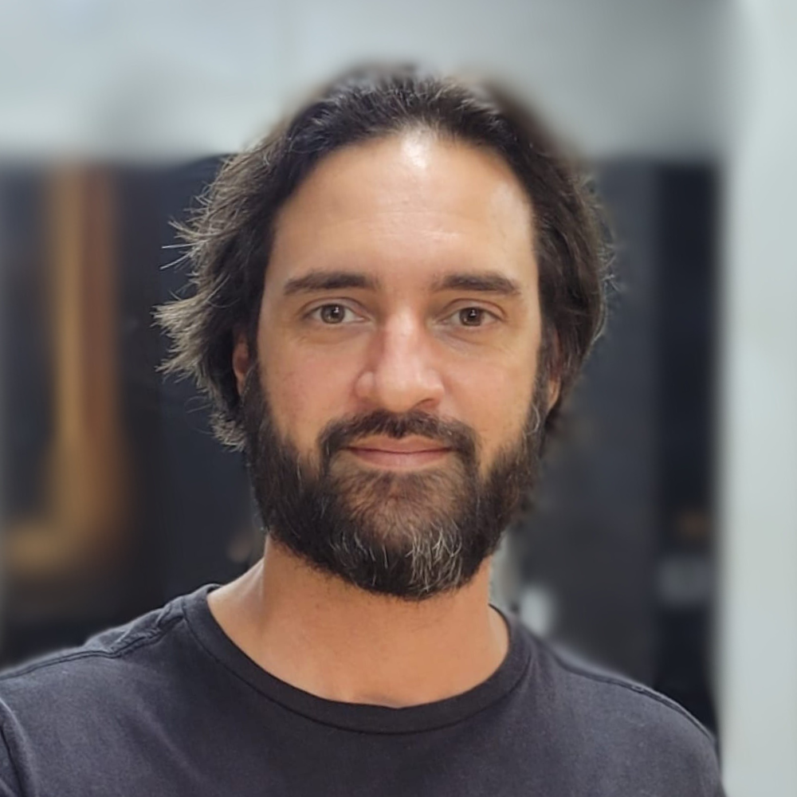

“A Psicanálise é, em essência, uma cura pelo amor.”
Sigmund Freud

Psicanalista e filósofo
Conrado Lima
Sou Psicanalista em formação freudiana e lacaniana e filósofo, além de músico, professor e consultor de empresas nas áreas de marketing e empreendedorismo.
Sou bacharel em Filosofia (UFRJ), Pós Graduado em Marketing (PUC Goiás), e sigo meus estudos em Psicanálise como participante do Fórum do Campo Lacaniano (polo região serrana RJ).
Venho trabalhando, por via da psicanálise, ajudando pessoas a atravessarem situações de sofrimento.
Quando as situações se apresentam difíceis demais, cada vez mais intensas e frequentes, e o pensamento já não dá conta de resolvê-las, é preciso sair do automático.
A Psicanálise amplia a nossa capacidade de agir, que cresce junto com a capacidade de criar novas formas de linguagem, novas formas de ver o mundo.
Vamos juntos nessa jornada de autoconhecimento?
Leia MaisComo funciona meu atendimento em Psicanálise
Como a Psicanálise funciona?
A Psicanálise é um método terapêutico pela fala, e foi criada e desenvolvida por Sigmund Freud no início do século XX. Sua abordagem considera o inconsciente como instância fundamental dos processos psíquicos, e portanto como ponto central do processo de análise. Isso significa que a escuta analítica busca aquilo que nem o paciente está sendo capaz de dizer, uma vez que não conhece as causas dos sintomas que lhe causam sofrimento. Através da fala e da escuta, o par analítico - analista e analisando - buscam trazer à consciência, gradativamente, a compreensão sobre suas histórias de vida e seus significados, resultando na redução dos sintomas e melhoria das condições do analisando.
A Psicanálise tem comprovação científica?
A Psicanálise tem seus próprios caminhos de produção de conhecimento, uma vez que seus métodos consideram a singularidade e não se propõe a satisfazer um método em que se comprove que "qualquer um, em qualquer lugar, possa chegar ao mesmo resultado" (como se verifica no método científico). Ao contrário, a psicanálise existe para conduzir o sujeito à sua individuação e pertencimento, o que significa que o resultado de cada análise é único. A Psicanálise pode ser considerada precursora da psicoterapia moderna e segue sendo uma das principais abordagens adotadas por terapeutas de todo o mundo. Sua eficácia é reconhecida, na prática, pelos resultados que promove ao sujeito em sofrimento.
Qual é a minha formação?
Sou Filósofo formado pela UFRJ (2010), Psicanalista com cursos na Escola de Psicanálise de Curitiba, participante do Fórum do Campo Lacaniano no Pólo Região Serrana do Rio de Janeiro. Também sou pós-graduado em Marketing e Gestão Comercial (PUC-GO), e atuo também como consultor de negócios e empresas. Nas áreas de marketing e empreendedorismo, coordeno cursos de pós-graduação e leciono em diversas instituições pelo Brasil.
Então você não é psicólogo?
Isso mesmo. Eu não sou psicólogo. Sou psicanalista e filósofo.
Como o próprio Freud diz, em "Linhas de Progresso na Terapia Psicanalítica" (1919): "A psicanálise não é uma disciplina médica no sentido estrito. [...] deve ser acessível a todos os que tenham interesse e capacidade de aplicá-la."
Quando escolher a Psicanálise para o seu processo terapêutico?
Em minhas palavras, a psicanálise é envolta de mistério — e isso é parte do próprio tratamento. Entendê-la já é, em si, um movimento de autoconhecimento.
Desde o início, Freud tratava com palavras pessoas que sofriam de sintomas para os quais a medicina não encontrava explicação. Assim nasceu um método em que a fala cura — não por ensinar, mas por revelar.
Hoje, não é diferente. Ao sujeito em sofrimento, o mundo oferece de tudo: soluções instantâneas, promessas científicas nem sempre tão “científicas”, slogans motivacionais. E quando tudo isso falha, a escuta se apresenta — silenciosa, eficaz.
A psicanálise segue como uma das principais abordagens da psicoterapia moderna, e sua verdadeira “prova social” está nos efeitos que os analisandos experimentam em suas vidas: transformações sutis, mas profundas.
Não é uma terapia breve, mas isso não significa estagnação. A cada sessão, algo se move. O sintoma perde força, o sujeito ganha presença.
A psicanálise age justamente onde outros métodos, testes ou modelos não foram suficientes. Porque ela não oferece uma “cura milagrosa”, e sim um caminho de elaboração — um processo de transformação constante, que evolui em camadas de compreensão e consciência.
Escolher a psicanálise é escolher o trabalho vivo de se transformar — e sustentar o próprio movimento de ser quem se é.
Qual o valor da Sessão?
A análise é conduzida em sessões individuais.
O valor é definido na primeira conversa — acessível o bastante para caber na rotina, e sério o suficiente para que haja compromisso.
Aceita plano de saúde?
Não atendo por planos de saúde.
Será que a Psicanálise é pra mim?
Diante das soluções mágicas que prometem mudar tudo da noite para o dia, é preciso dizer com honestidade:
O processo psicanalítico não é:
- Aconselhamento
- Uma solução passiva para seus problemas
Mas é, antes de tudo:
- Valioso instrumento de autoconhecimento
- Compreensão mais profunda sobre sua personalidade
- Confiança e sigilo sobre suas histórias de vida
- Transformação sólida a partir da consciência
- Um caminho para a liberdade de ser quem se é!
Agende sua Sessão
Estou disponível para atendimento psicanalítico para adultos, online ou presencial na cidade de Petrópolis (RJ).
Para falar comigo, clique no botão abaixo e acesse meu whatsapp.
Whatsapp